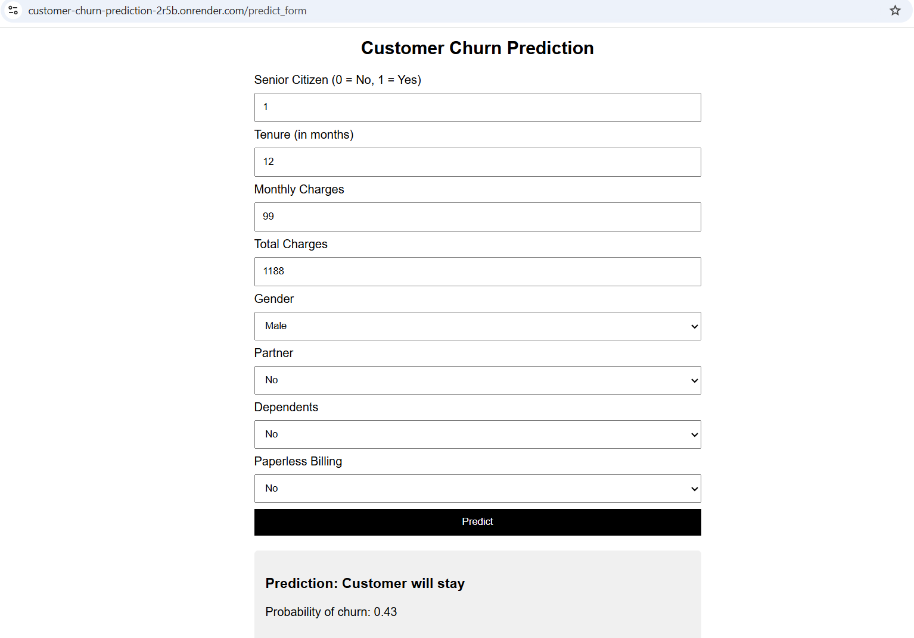
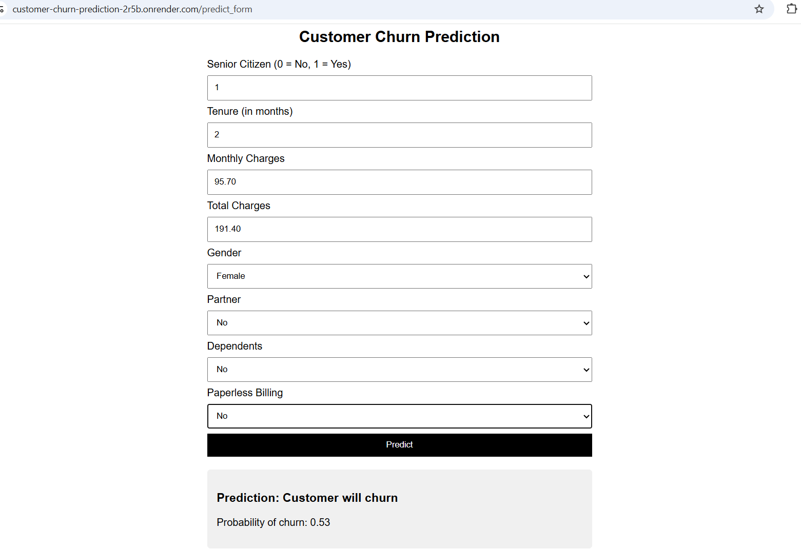

Sanjai Arul
Master's student in Data Science at Adelaide University — building end-to-end ML systems and deploying LLMs in real-world applications.
About
I build end-to-end machine learning systems with a focus on large language models, speech processing, and real-world deployment constraints. My work sits at the intersection of research and engineering — I care as much about how a system fails as how it succeeds. Currently exploring multimodal AI and LLM-based applications across eCommerce, audio, and predictive analytics.
Projects
LLM-based eCommerce Application
Three intelligent agents for an online cell phone store — advertisement generation, product recommendation, and customer review analysis
Problem & Motivation
Running a phone store means managing hundreds of product images, 720 product records, and nearly 68,000 customer reviews. Traditional tools — SQL, manual tagging, spreadsheets — don't scale and can't understand natural language. I built three LLM agents to automate the full pipeline from ad creation to business intelligence.
System Design
Task 1 — BLIP2 scans images and generates captions.
Qwen2-VL writes tone-controlled slogans overlaid on product images using PIL.
Task 2 — TableLLM-7B interprets natural language queries
over an enriched dataset. Qwen3-1.7B provides richer recommendations
via a Gradio GUI.
Task 3 — Qwen3-4B classifies all reviews as
Positive / Neutral / Negative, summarises top feedback themes,
and generates grounded product improvement suggestions.
Task 3 — Sentiment Analysis Results
Key Challenges
— BLIP2 tokenizer incompatibility with Python 3.12
— Regex capturing trailing punctuation in numeric filters
— Balancing TableLLM precision vs Qwen3 language quality
— Processing 67,986 reviews within GPU memory constraints
Trade-offs & Learnings
Model selection must match task type — BLIP2 excels at captioning but struggles with creative generation. The key insight: LLMs interpret ambiguous natural language that SQL simply cannot handle. A single Qwen3-4B model simultaneously classified, summarised, and generated insights in one inference pass.


Customer Churn Prediction
Web application giving non-technical users real-time churn predictions via a FastAPI backend and Random Forest classifier
Problem & Motivation
Customer churn predictions rarely make it into real systems. I built a web app where non-technical business users input customer details through a form and receive real-time churn probability — bridging the gap between ML model and business decision.
System Design
An HTML form collects customer inputs and sends them to a FastAPI backend where features are scaled and encoded. A trained Random Forest classifier returns churn probabilities rendered via Jinja2 templates dynamically in the browser.
Key Challenges
— Feature name consistency between training and serving
— Manual preprocessing pipeline reliability
— Deployment-time parsing and dependency issues
Trade-offs & Learnings
Explicit preprocessing improved debuggability and reliability. The main lesson: deployment issues arise more from data mismatches than model architecture choices.


Writing
Connect